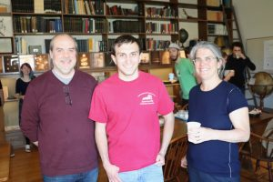

Who are we?
We are a start-up who want to change the relationship with the book. While our experience is primarily in astronomy, and working with huge data, we are currently undertaking an ambitious plan of changing the ways books have always been. We will be working towards a product that will allow for more interactive books, convert the older format of the books to better forms, thus transform the reading experience. As the first step for the project, we are applying for MIT Sandbox Innovative Fund.
Who is Ekalavya?
We have named our start-up after a tragic hero in Mahabharat. Aekalavya (or Ekalavya), not born under household, became the best archer in his realm. He worked in his skills by practising on his own, except for the presence of a statue of Dronacharya, a royal teacher, who did not know of Aekalavya until one day when Dronacharya saw that a dog had been skillfully muffled with arrows. Fearful of his job at the palace for some random stranger has bested his pupils, Dronacharya asked Ekalavya to donate this right thumb as a payment for teaching.
Our Vision
The experience of reading books has not changed over the course of last 600 years. We have found novel ways of self-expressions. We tweet, we post status, we post pictures, and our society has found novel ways for self expression. And if someone were to write a book and try to capture our society writing a books, a large portion of it will be missing. Hence, we need a new platform where it will be possible to capture the subtleties of the modern human life
Today new technologies such as audio books, and multimedia have emerged as alternatives to traditional books. Newspapers have tried to change themselves, however books have remained the same. It is time we change the books using the appropriate technology at hand. We can make the personalize the experience of reading book, make it more immersive, introduce novel tools for expression, and help sometimes to overcome cultural barriers for understanding.
We intend to release our first products by the end of the year 2019, and continue to improve our product in the time to follow.
About Us
Currently our team has two developers:
Prajwal Niraula : I am currently a graduate student in EAPS Department at MIT. While not hunting exoplanets using Artemis, or characterizing them, I get excited at how the future will be different than the present. I have seen glimpses of the future in the many projects that happen at MIT, which inspired me to think about how can I help create a better world. You can reach out to me to at pniraula@mit.edu.

Anthony Santini: I graduated in May 2019 from Wesleyan University with a Master’s degree in astronomy. I have been studying the X-ray point source populations outside the optical extent of each galaxy using data primarily using Chandra X-ray Observatory. I operate 24" Perkins telescope operated by Wesleyan University, and take pretty pictures of pretty galaxies. You can reach out to me at asantini@wesleyan.edu
Contact
We are currently actively looking for new members to join our team. If you are excited about our project, and think you have something valuable to contribute to our project, please reach out to us at aekalavya.startup@gmail.com